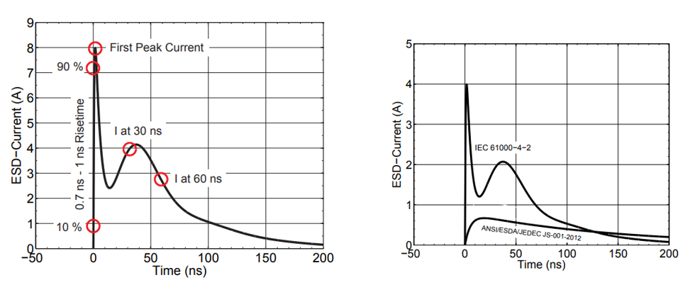
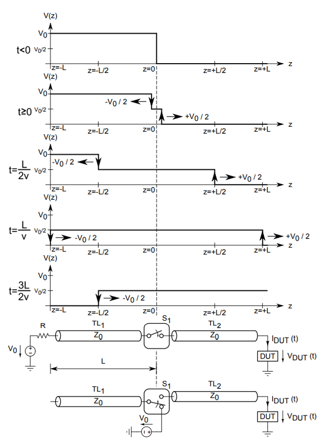
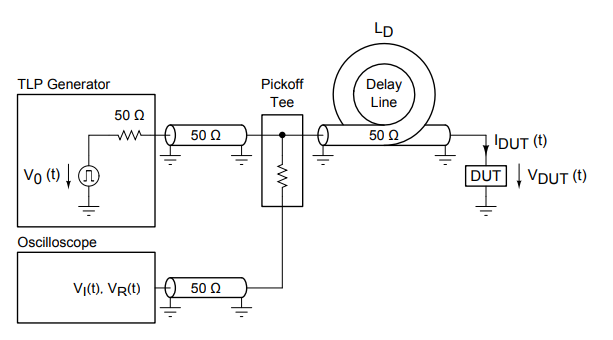
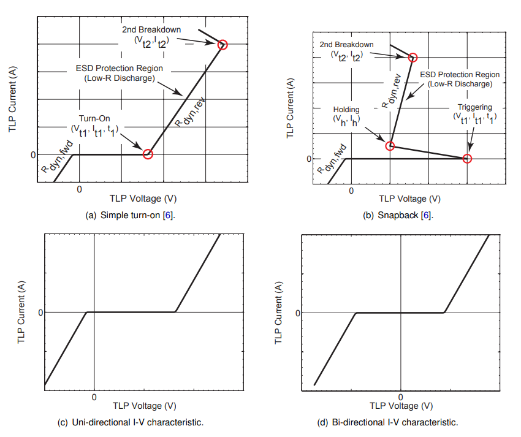
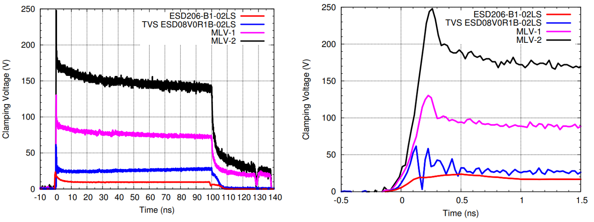
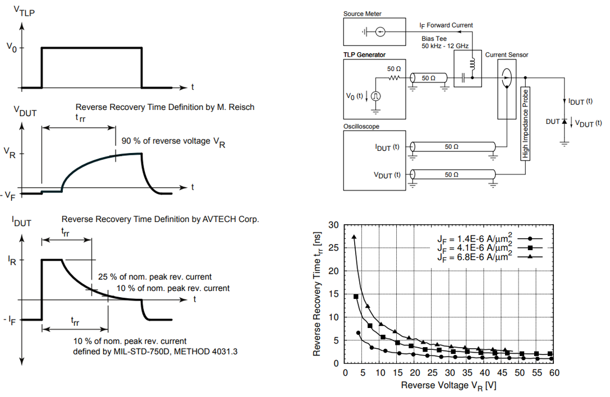
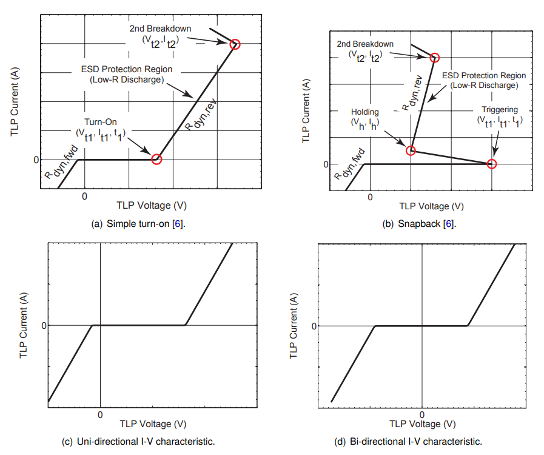

Physics-based methodology for predictive system-level ESD robustness using Very-Fast Transmission Line Pulse (VF-TLP) characterization.
System-level ESD according to IEC 61000-4-2 introduces significantly higher peak current and faster rise-time compared to component-level HBM qualification. Traditional trial-and-error ESD debugging increases redesign cycles and delays compliance. VF-TLP provides quantitative transient characterization bridging device physics and system robustness.
| Parameter | HBM (Component) | IEC 61000-4-2 (System) |
|---|---|---|
| RC Network | 100 pF / 1.5 kΩ | 150 pF / 330 Ω |
| Peak Current @1kV | ~0.67 A | ~3.75 A |
| Rise Time | 2–10 ns | 0.7–1 ns |
| Peak Current @8kV | N/A | 30 A |

Pulse width of classical TLP:
\[ t_p = \frac{2L}{v} \]
where $L$ is transmission line length and $v$ is propagation velocity.

When pulse width < 10 ns, incident and reflected waves overlap. VF-TLP separates them using delay-line technique:
\[ V_{DUT}(t) = V_I(t) + V_R(t) \]
\[ I_{DUT}(t) = \frac{V_I(t) - V_R(t)}{Z_0} \]


Dynamic resistance:
\[ R_{dyn} = \frac{\Delta V}{\Delta I} \]
Lower $R_{dyn}$ results in improved clamping performance.
Overshoot is driven by parasitic inductance:
\[ V = L \cdot \frac{dI}{dt} \]


Fast recovery reduces transient stress and limits overshoot.

Multi-pulse evaluation enables degradation tracking:
VF-TLP transforms system-level ESD engineering from empirical debugging to predictive device characterization.